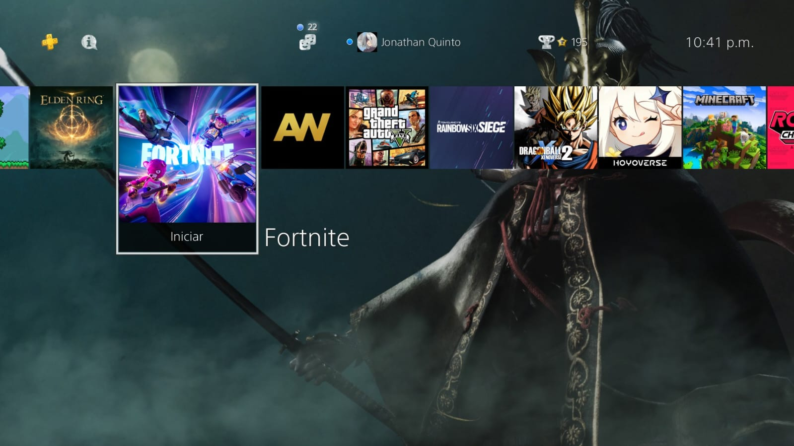
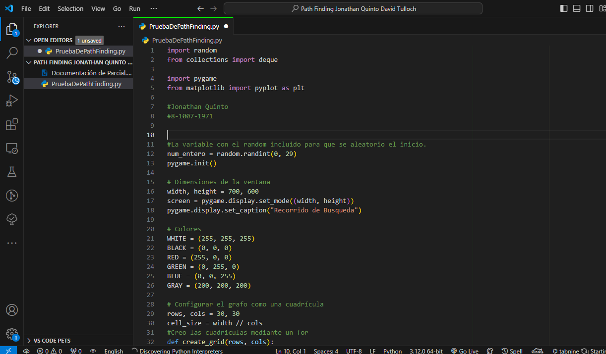

Jonathan Isael Quinto Velasquez
Desarrollador de Software (muy novato)
Principal
"Ampliar mi conocimiento en cuanto a mis estudios y lograr desarrollar un buen trabajo en el area que vaya a trabajar."
No se que colocar aqui
Experiencia Laboral
- Trabajador manual en Consultorios Médicos Paitilla (2 de mayo del 2024 - Actualidad)
Educación
- Universidad Tecnológica de Panamá: Segundo año - Licenciatura en Desarrollo y Gestión de Software
- Universidad Hosanna: 1 año de Licenciatura en Redes
- Instituto José Dolores Moscote: Bachiller en Ciencias 2020-2022
- Colegio El Buen Pastor Jireh 2008-2019
Intereses y Pasatiempos
- Videojuegos
- Baloncesto
- Mejorar habilidades aprendidas


Idiomas
- Inglés: Capaz de entender y leer con dificultad para formular respuestas.
Habilidades Técnicas
- Conocimiento en Java, JavaScript, HTML, CSS, C#, Python.
- Consultas SQL, conexión código-base de datos.